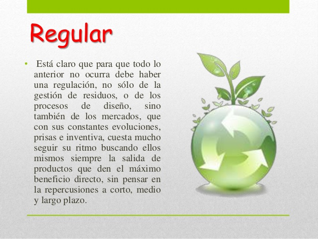

Regular en el reciclaje es aprender a decir NO y controlar aquellos hábitos de Consumo innecesarios, compras compulsivas y consumismo excesivo. Comprando y haciendo uso de solo lo necesario, es decir, vivir sin excesos.

Miremos las definiciones de las cinco erres y profundizar en la R de REGULAR